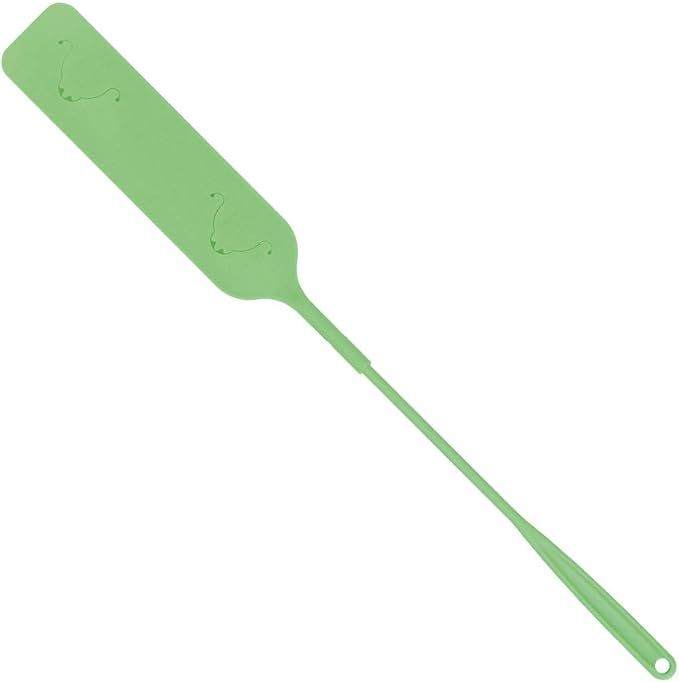

暮らしの日用品特集
——139本の比較記事まとめ

暮らしの日用品まわりで、これまで比較してきた記事を139本まとめました。気になるところから読んでみてください。新しい記事が増えたら、ここにも追加していきます。
-
2026.10.19 レッグウォーマー、ウール・シルク混・ショート丈で選ぶ——1回あたり約¥2〜¥12、4点を比較
縄編みウール、シルク&メリノウール、シルク混ショート丈、裏シルク2足組の4点を比較。価格¥599〜¥2,350、冬のあいだ2シーズン使う想定の1回あたりの価格、丈と素材・枚数の違い、レビュー実績を整理しました。
-
 2026.10.19 ワインオープナー、ソムリエナイフと電動で選ぶ——1本あたり約¥6〜¥13、6点を比較
2026.10.19 ワインオープナー、ソムリエナイフと電動で選ぶ——1本あたり約¥6〜¥13、6点を比較ソムリエナイフ、USB充電式の電動、電池式の4点セットなど6点を比較。価格¥1,880〜¥3,850、週2本あける3年間で使う想定の1本あたりの価格、方式と電源・付属品の違い、レビュー実績を整理しました。
-
 2026.10.19 イヤーウォーマー、バンドなし・通気穴付き・折りたたみ・ボアで選ぶ——1回あたり約¥4〜¥8、7点を比較
2026.10.19 イヤーウォーマー、バンドなし・通気穴付き・折りたたみ・ボアで選ぶ——1回あたり約¥4〜¥8、7点を比較ボア、バンドなし、通気穴付きベロア、折りたたみニット、極暖の肉厚ボアの7点を比較。価格¥780〜¥1,680、冬の通勤で2シーズン使う想定の1回あたりの価格、耳の覆い方と素材の違い、レビュー実績を整理しました。
-
 2026.10.19 名刺入れ、大容量・天然木コンビ・スリム型で選ぶ——1回あたり約¥4〜¥7、5点を比較
2026.10.19 名刺入れ、大容量・天然木コンビ・スリム型で選ぶ——1回あたり約¥4〜¥7、5点を比較サフィアーノレザー、天然木コンビ、50枚収納のマチ付き、コンパクト、二つ折りスリムの本革5点を比較。価格¥2,700〜¥4,990、仕事で3年使う想定の1回あたりの価格、形と名入れの違い、レビュー実績を整理しました。
-
 2026.10.19 枕カバー、シルクの匁数・片面か両面か・ガーゼ綿で選ぶ——1夜あたり約¥2〜¥9、7点を比較
2026.10.19 枕カバー、シルクの匁数・片面か両面か・ガーゼ綿で選ぶ——1夜あたり約¥2〜¥9、7点を比較シルクの19匁・22匁・25匁、片面と両面、2枚セット、日本製のガーゼ綿の7点を比較。価格¥1,380〜¥3,300、毎晩1年使う想定の1夜あたりの価格、素材と枚数の違い、レビュー実績を整理しました。
-
 2026.10.19 ニット帽、ロングビーニー・リブ・キャスケットで選ぶ——1回あたり約¥5〜¥13、5点を比較
2026.10.19 ニット帽、ロングビーニー・リブ・キャスケットで選ぶ——1回あたり約¥5〜¥13、5点を比較定番のビーニー、ロングビーニー、リブ編み、つば付きのニットキャスケットの5点を比較。価格¥970〜¥2,580、冬の通勤で2シーズン使う想定の1回あたりの価格、形と素材表記の違い、レビュー実績を整理しました。
-
 2026.10.19 計量カップ、耐熱ガラスとステンレスボウル兼用で選ぶ——1回あたり約¥2〜¥4、5点を比較
2026.10.19 計量カップ、耐熱ガラスとステンレスボウル兼用で選ぶ——1回あたり約¥2〜¥4、5点を比較PYREX・HARIO・Fire Kingの耐熱ガラスと、家事問屋・roomyのステンレス兼用タイプの5点を比較。価格¥1,650〜¥2,980、5年使う想定の1回あたりの価格、素材と容量の違い、レビュー実績を整理しました。
-
 2026.10.19 ネックウォーマー、フリース・ボア・バラクラバ型で選ぶ——1回あたり約¥5〜¥12、6点を比較
2026.10.19 ネックウォーマー、フリース・ボア・バラクラバ型で選ぶ——1回あたり約¥5〜¥12、6点を比較ブークレフリース、ロングのマイクロフリース、フリース×ボア、バラクラバ型、リバーシブルの6点を比較。価格¥980〜¥2,420、冬の通勤で使う場合の1回あたりの価格、素材と形の違い、レビュー実績を整理しました。
-
 2026.10.19 ランチバッグ、小さめ・大容量・ワイヤー型・巾着型で選ぶ——1回あたり約¥4〜¥9、6点を比較
2026.10.19 ランチバッグ、小さめ・大容量・ワイヤー型・巾着型で選ぶ——1回あたり約¥4〜¥9、6点を比較小さめのアルミ素材、大容量のトート、折りたたみ式、ワイヤー型、巾着型の6点を比較。価格¥1,000〜¥2,200、1年使った場合の1回あたりの価格、形と大きさの違い、レビュー実績を整理しました。
-
 2026.10.18 スマホ対応手袋、指なし・裏起毛・日本製・完全防水で選ぶ——1回あたり約¥5〜¥10、5点を比較
2026.10.18 スマホ対応手袋、指なし・裏起毛・日本製・完全防水で選ぶ——1回あたり約¥5〜¥10、5点を比較指なしの綿ニット、裏フリースの防風タイプ、女性向け、完全防水、日本製の5点を比較。価格¥1,000〜¥1,999、冬の通勤で使う場合の1回あたりの価格、指先の形と防寒の中身の違い、レビュー実績を整理しました。
-
 2026.10.18 単3形電池、アルカリと充電池で選ぶ——1本あたり約¥64〜¥394、4点を比較
2026.10.18 単3形電池、アルカリと充電池で選ぶ——1本あたり約¥64〜¥394、4点を比較パナソニックのアルカリ乾電池、enelong、Pool、エネループ充電器セットの4点を比較。価格¥1,280〜¥4,650、1本あたりの価格、アルカリの何回分で充電池の元が取れるかの目安、充電器の有無を整理しました。
-
 2026.10.18 キッチントング、指先・あげもの・穴あきで選ぶ——5年毎日使って1日あたり約¥0.7〜¥1.4、5点を比較
2026.10.18 キッチントング、指先・あげもの・穴あきで選ぶ——5年毎日使って1日あたり約¥0.7〜¥1.4、5点を比較leyeのゆびさき・あげもの・2種セット、fasao、柳宗理の穴あきトングの5点を比較。価格¥1,240〜¥2,550、5年毎日使った場合の1日あたり、使う場面別のタイプの違い、レビュー実績を整理しました。
-
 2026.10.18 三徳包丁、issiki・GLOBAL・NAGOMIで選ぶ——5年毎日使って1日あたり約¥2.7〜¥8.1、4本を比較
2026.10.18 三徳包丁、issiki・GLOBAL・NAGOMIで選ぶ——5年毎日使って1日あたり約¥2.7〜¥8.1、4本を比較三徳包丁（18cm）を、issiki・GLOBAL G-46・GLOBAL 2点セット・NAGOMIの4本で比較。価格¥4,980〜¥14,850、5年毎日使った場合の1日あたり、単品かセットか、レビュー実績を整理しました。
-
 2026.10.18 ミニ財布・小銭入れ、タイプで選ぶ——3年毎日使って1日あたり約¥1.0〜¥3.6、7点を比較
2026.10.18 ミニ財布・小銭入れ、タイプで選ぶ——3年毎日使って1日あたり約¥1.0〜¥3.6、7点を比較楽天市場でレビューの多いミニ財布・小銭入れ7点を比較。ミニ財布・三つ折り・二つ折り・L字ファスナーの小銭入れといったタイプの違いと、3年毎日使った場合の1日あたり、レビュー実績を整理しました。
-
 2026.10.18 ハンカチ、枚数セットと生地で選ぶ——1枚1回あたり約¥1.6〜¥2.8、6点を比較
2026.10.18 ハンカチ、枚数セットと生地で選ぶ——1枚1回あたり約¥1.6〜¥2.8、6点を比較楽天市場でレビューの多い今治タオル系ハンカチ6点を比較。ガーゼ薄手・タオル地・総柄プリントの違いと、2枚〜5枚の枚数セット、1枚を1年使う想定の1回あたり、レビュー実績を整理しました。
-
 2026.10.18 パスケース、リール付き・コイン収納・薄型で選ぶ——1日あたり約¥1.4〜¥6.8、6点を比較
2026.10.18 パスケース、リール付き・コイン収納・薄型で選ぶ——1日あたり約¥1.4〜¥6.8、6点を比較楽天市場でレビューの多いパスケース・カードケース6点を比較。リール付き・小銭も入るタイプ・薄型・ミニ財布型の違いと、2年毎日使う想定の1日あたり、レビュー実績を整理しました。
-
 2026.10.17 化粧ポーチ、吊り下げ・自立・がま口・本革で選ぶ——1日あたり約¥1.9〜¥5.2、7点を比較
2026.10.17 化粧ポーチ、吊り下げ・自立・がま口・本革で選ぶ——1日あたり約¥1.9〜¥5.2、7点を比較楽天市場でレビューの多い化粧ポーチ7点を比較。吊り下げ型・自立型・がま口・本革フラットやL字の違い、撥水・洗えるなどの表記と、2年毎日使う想定の1日あたり、レビュー実績を整理しました。
-
 2026.10.17 フライパン、鉄・軽量コーティング・セットで選ぶ——1日あたり約¥2.7〜¥11.3、6点を比較
2026.10.17 フライパン、鉄・軽量コーティング・セットで選ぶ——1日あたり約¥2.7〜¥11.3、6点を比較楽天市場でレビューの多いフライパン6点を比較。鉄製・軽量コーティング・鍋つきセットの違いと、2年毎日使う想定の1日あたり、レビュー実績、保証の表記を整理しました。
-
 2026.10.17 メガネケース、ハード・スリム・名入れで選ぶ——1日あたり約¥2.0〜¥9.6、7点を比較
2026.10.17 メガネケース、ハード・スリム・名入れで選ぶ——1日あたり約¥2.0〜¥9.6、7点を比較楽天市場でレビューの多いメガネケース7点を比較。形を保つハード型と薄く持ち歩けるスリム型の違い、素材、名入れの有無と、1年毎日使う想定の1日あたり、レビュー実績を整理しました。
-
 2026.10.17 ソープディスペンサー、充電式・壁掛け・対応液で選ぶ——1日あたり約¥2.3〜¥4.5、6点を比較
2026.10.17 ソープディスペンサー、充電式・壁掛け・対応液で選ぶ——1日あたり約¥2.3〜¥4.5、6点を比較自動で泡が出るソープディスペンサーを楽天市場の6点で比較。充電式・壁掛け・食器用洗剤対応など出品名の違いと、3年毎日使う想定の1日あたり、レビュー実績を整理しました。
-
 2026.10.17 ランチョンマット、シリコンと布で選ぶ——1回あたり約¥0.6〜¥3.8、6点を比較
2026.10.17 ランチョンマット、シリコンと布で選ぶ——1回あたり約¥0.6〜¥3.8、6点を比較シリコン製と布製のランチョンマットを計6点で比較。価格帯¥460〜¥1,000、1年・平日に使う想定の1回あたりとレビュー実績で整理しました。
-
 2026.10.17 スープジャー、容量とメーカーで選ぶ——1回あたり約¥1.6〜¥4.5、5点を比較
2026.10.17 スープジャー、容量とメーカーで選ぶ——1回あたり約¥1.6〜¥4.5、5点を比較サーモス・アトラス・500ml大容量タイプのスープジャーを計5点で比較。価格帯¥1,280〜¥3,499、3年・平日に使う想定の1回あたりとレビュー実績で整理しました。
-
 2026.10.17 歯ブラシスタンド、UV除菌型か吸盤式かで選ぶ——1日あたり約¥3〜¥11、6点を比較
2026.10.17 歯ブラシスタンド、UV除菌型か吸盤式かで選ぶ——1日あたり約¥3〜¥11、6点を比較吸盤式・コップ付き・UV除菌型の歯ブラシスタンドを、tower・livingut・112storeなど計6点で比較。価格帯¥1,210〜¥3,925、1年使う想定の1日あたりとレビュー実績で整理しました。
-
 2026.10.17 カフェオレボウル、土物・備前焼・美濃焼・有田焼で選ぶ——1日あたり約¥0.9〜¥3.2、6点を比較
2026.10.17 カフェオレボウル、土物・備前焼・美濃焼・有田焼で選ぶ——1日あたり約¥0.9〜¥3.2、6点を比較土物の碗・角型ボウル・美濃焼・備前焼・有田焼のカフェオレボウルを計6点で比較。価格帯¥990〜¥3,520、3年使う想定の1日あたりとレビュー実績で整理しました。
-
 2026.10.16 野菜スライサー、セット型とキャベツ専用で選ぶ——1回あたり約¥3〜¥9、6点を比較
2026.10.16 野菜スライサー、セット型とキャベツ専用で選ぶ——1回あたり約¥3〜¥9、6点を比較千切り・おろし・細千切りが1台でできるセット型と、キャベツ千切りに絞った単機能タイプを、貝印・プログレード・ののじ・サンクラフトなど計6点で比較。価格帯¥1,230〜¥4,370、3年使う想定の1回あたりとレビュー実績で整理しました。
-
 2026.10.16 衣類スチーマー、ハンディタイプを価格とレビューで選ぶ——1回あたり約¥10〜¥32、7点を比較
2026.10.16 衣類スチーマー、ハンディタイプを価格とレビューで選ぶ——1回あたり約¥10〜¥32、7点を比較ハンガーにかけたまま使えるハンディタイプの衣類スチーマーを、±0・Kocokara・2WAY/3WAY/4in1表記の違う計7点で比較。価格帯¥2,980〜¥9,900、3年使う想定の1回あたりとレビュー実績で整理しました。
-
 2026.10.16 キーケース、連数・スマートキー対応・名入れで選ぶ——1日あたり約¥5.4〜¥16.3、6点を比較
2026.10.16 キーケース、連数・スマートキー対応・名入れで選ぶ——1日あたり約¥5.4〜¥16.3、6点を比較本革のキーケースを、4連・5連の定番型とスマートキー対応型、名入れの有無で6点比較。価格帯¥1,980〜¥5,940、1年毎日使う想定の1日あたりとレビュー実績で整理しました。
-
 2026.10.15 LEDキャンドル、ティーライト型とガラス型で選ぶ——1個あたり約¥726〜¥1,330、6点を比較
2026.10.15 LEDキャンドル、ティーライト型とガラス型で選ぶ——1個あたり約¥726〜¥1,330、6点を比較火を使わないLEDキャンドルを、ティーライト型・ガラス型、1個売りとセット売りで6点比較。商品名に書かれた個数から、1個あたりの価格とレビュー実績で整理しました。
-
 2026.10.15 風呂イス、マグネット・引っ掛け・アクリルで選ぶ——3年使う想定で1日あたり約¥2〜¥5、5点を比較
2026.10.15 風呂イス、マグネット・引っ掛け・アクリルで選ぶ——3年使う想定で1日あたり約¥2〜¥5、5点を比較風呂イス（バスチェア）を、山崎実業towerのマグネット式2種・引っ掛け式・アクリル製・高さ選択式の計5点で比較。価格帯¥2,200〜¥5,940、3年使う想定の1日あたりとレビュー実績で整理しました。
-
 2026.10.15 靴のインソール、衝撃吸収・アーチ・スポーツ・エアで選ぶ——半年使う想定で1日あたり約¥3〜¥11、6点を比較
2026.10.15 靴のインソール、衝撃吸収・アーチ・スポーツ・エアで選ぶ——半年使う想定で1日あたり約¥3〜¥11、6点を比較靴のインソール（中敷き）を、衝撃吸収の2足セット、ハイアーチ、アスリート向け、エアタイプなど計6点で比較。価格帯¥1,000〜¥1,980、半年毎日使う想定の1日あたりとレビュー実績で整理しました。
-
 2026.10.15 フライ返し（シリコン）、単品・3点・9〜12点セットで選ぶ——1日あたり約¥3.3〜¥11.8、7点を比較
2026.10.15 フライ返し（シリコン）、単品・3点・9〜12点セットで選ぶ——1日あたり約¥3.3〜¥11.8、7点を比較シリコン製のフライ返しを、単品3点、3点セット、9本・12点のキッチンツールセットの計7点で比較。価格帯¥1,210〜¥4,290、1年毎日使う想定の1日あたりとレビュー実績で整理しました。
-
 2026.10.14 掃除用の重曹、950gから6.1kgまで——1回あたり約¥4〜¥9、4点を比較
2026.10.14 掃除用の重曹、950gから6.1kgまで——1回あたり約¥4〜¥9、4点を比較掃除用の重曹を、950g・1kg・1kg×2個・6.1kgの4点で比較。掃除1回分を10gと置いた1回あたりの費用と、置き場所、レビュー実績で整理しました。価格帯は¥499〜¥2,629です。
-
 2026.10.14 オイルポット、ホーロー・ステンレス・活性炭フィルターで選ぶ——1回あたり約¥19〜¥51、6点を比較
2026.10.14 オイルポット、ホーロー・ステンレス・活性炭フィルターで選ぶ——1回あたり約¥19〜¥51、6点を比較オイルポット（油こし器）を、富士ホーローのホーロー製4点とステンレス製2点の計6点で比較。週2回・1年使う想定の1回あたりと、レビュー実績で整理しました。価格帯は¥1,980〜¥5,280です。
-
 2026.10.14 ピーラー、T型・グローブ・キャベツ千切り・オールステンレスで選ぶ——1回あたり約¥6〜¥13、5点を比較
2026.10.14 ピーラー、T型・グローブ・キャベツ千切り・オールステンレスで選ぶ——1回あたり約¥6〜¥13、5点を比較ピーラーを、定番のT型・手にはめるグローブ型・キャベツの千切り用・プラスチック柄とオールステンレスのユニークピーラーの5点で比較。週3回使う想定の1回あたりと、レビュー実績で整理しました。価格帯は¥1,000〜¥1,980です。
-
 2026.10.14 エコバッグ、コンビニサイズ・レジカゴ型・バスケット型で選ぶ——週3回持っていく想定の1回あたり約¥8.2〜¥21.8、7点を比較
2026.10.14 エコバッグ、コンビニサイズ・レジカゴ型・バスケット型で選ぶ——週3回持っていく想定の1回あたり約¥8.2〜¥21.8、7点を比較折りたたみエコバッグを、コンビニサイズ・レジカゴ型・保冷付き・30Lのバスケット型・トート型など、タイプの違う7点で比較。週3回持っていく想定の1回あたり、レビュー実績、用途の違いで整理しました。価格帯は¥1,280〜¥3,398です。
-
 2026.10.13 バッグインバッグ、フェルト・ナイロン・縦型・特定バッグ向けで選ぶ——1年毎日使う想定の1日あたり約¥2.4〜¥6.8、6点を比較
2026.10.13 バッグインバッグ、フェルト・ナイロン・縦型・特定バッグ向けで選ぶ——1年毎日使う想定の1日あたり約¥2.4〜¥6.8、6点を比較バッグインバッグを、フェルト・ナイロン・縦型・仕切り付き・リュック向け・特定バッグ向けなどタイプの違う6点で比較。1年毎日使う想定の1日あたり、レビュー実績、素材と形の違いで整理しました。価格帯は¥880〜¥2,480です。
-
 2026.10.13 玄関マット、キリム・吸水・シャギーなど素材で選ぶ——1年使う想定の1日あたり約¥3.6〜¥8.2、6点を比較
2026.10.13 玄関マット、キリム・吸水・シャギーなど素材で選ぶ——1年使う想定の1日あたり約¥3.6〜¥8.2、6点を比較玄関マットを、キリム・ゴブラン織り・薄型の泥落とし・吸水・シャギーなど素材とタイプの違う6点で比較。1年毎日使う想定の1日あたり、タイプの違い、レビュー実績で整理しました。価格帯は¥1,308〜¥2,980です。
-
 2026.10.13 キッチンマット、拭ける透明タイプと洗える布製で選ぶ——1年使う想定の1日あたり約¥3.8〜¥11.5、6点を比較
2026.10.13 キッチンマット、拭ける透明タイプと洗える布製で選ぶ——1年使う想定の1日あたり約¥3.8〜¥11.5、6点を比較キッチンマットを、拭ける透明PVCタイプと洗える布製（フランネル・マイクロファイバー等）の6点で比較。1年毎日使う想定の1日あたり、タイプの違い、レビュー実績で整理しました。価格帯は¥1,380〜¥4,180です。
-
 2026.10.13 包丁研ぎ器、シャープナーと砥石セットで選ぶ——1回あたり約¥98〜¥165、5点を比較
2026.10.13 包丁研ぎ器、シャープナーと砥石セットで選ぶ——1回あたり約¥98〜¥165、5点を比較包丁研ぎ器を、ダイヤモンド式シャープナー3点・貝印の関孫六（ダイヤモンド＆セラミック）・両面砥石の5点セットの計5点で比較。月1回研ぐ想定の1回あたり、タイプの違い、レビュー実績で整理しました。価格帯は¥1,180〜¥1,980です。
-
 2026.10.13 貼る使い捨てカイロ、1枚あたり約¥22〜¥29——まとめ買い4点を比較
2026.10.13 貼る使い捨てカイロ、1枚あたり約¥22〜¥29——まとめ買い4点を比較貼るタイプの使い捨てカイロを、オカモト快温くん・アイリスオーヤマ・unidyの4点で比較。30枚〜120枚の入り枚数の違い、1枚あたりの価格、冬のあいだ毎日1枚使う場合の目安とレビュー実績で整理しました。価格帯は¥657〜¥2,860です。
-
 2026.10.13 トイレブラシ、ケース付き・2in1・壁掛け・浮かせるで選ぶ——1日あたり約¥3〜¥8、6点を比較
2026.10.13 トイレブラシ、ケース付き・2in1・壁掛け・浮かせるで選ぶ——1日あたり約¥3〜¥8、6点を比較トイレブラシを、ケース付きの標準タイプ・大小の2in1・床置きと壁掛けの2WAY・浮かせて置く縦型の計6点で比較。価格帯¥1,180〜¥2,890、1年毎日使う想定の1日あたりとレビュー実績で整理しました。
-
 2026.10.13 椅子用クッション、ゲル・低反発・円座・チェアパッドで選ぶ——1日あたり約¥2〜¥11、6点を比較
2026.10.13 椅子用クッション、ゲル・低反発・円座・チェアパッドで選ぶ——1日あたり約¥2〜¥11、6点を比較椅子用クッションを、ゲルタイプ・低反発と高反発の2層・円座・薄手のチェアパッドの計6点で比較。価格帯¥799〜¥3,980、1年毎日使う想定の1日あたりとレビュー実績で整理しました。
-
 2026.10.12 お香立て、陶器・ガラス・収納ケース型で選ぶ——1日あたり約¥2.4〜¥8.2、7点を比較
2026.10.12 お香立て、陶器・ガラス・収納ケース型で選ぶ——1日あたり約¥2.4〜¥8.2、7点を比較スティック用のお香立て（香皿）を、陶器・ガラス・ホワイトセメント・蓋付きケース・収納ケース型の7点で比較。価格帯¥880〜¥2,990、1年毎日使う想定の1日あたりとレビュー実績で整理しました。
-
 2026.10.12 ゴミ箱、分別ワゴンからスリムな蓋付きまで——3年使う想定の1日あたり約¥2.5〜¥6.2、6点を比較
2026.10.12 ゴミ箱、分別ワゴンからスリムな蓋付きまで——3年使う想定の1日あたり約¥2.5〜¥6.2、6点を比較キッチンに置く45L前後のゴミ箱を、ペダル式・分別ワゴン・スリムな蓋付きなど6点で比較。価格帯¥2,750〜¥6,820、3年毎日使う想定の1日あたりとレビュー実績で整理しました。
-
 2026.10.12 シャワーヘッド、ナノバブル系と節水タイプで選ぶ——1日あたり約¥6〜¥20、6点を比較
2026.10.12 シャワーヘッド、ナノバブル系と節水タイプで選ぶ——1日あたり約¥6〜¥20、6点を比較毎日使うシャワーヘッドを、マイクロナノバブル系5点と日本製の節水タイプ1点の計6点で比較。価格帯¥2,280〜¥7,180、1年毎日使う想定の1日あたりとレビュー実績で整理しました。
-
 2026.10.12 水筒、飲み口と容量で選ぶ——1日あたり約¥3〜¥16、5点を比較
2026.10.12 水筒、飲み口と容量で選ぶ——1日あたり約¥3〜¥16、5点を比較毎日持ち歩く水筒を、セラミックのタンブラー型・3way・炭酸対応・ワンタッチの直飲みマグの5点で比較。1年毎日使う想定の1日あたりと、レビュー実績で整理しました。
-
 2026.10.12 スプレーボトル、容量・アルコール対応・セット売りで選ぶ——1本1日あたり約¥0.5〜¥2.8、6点を比較
2026.10.12 スプレーボトル、容量・アルコール対応・セット売りで選ぶ——1本1日あたり約¥0.5〜¥2.8、6点を比較詰め替えて使うスプレーボトル（霧吹き）を、300mlのトリガー式・10mlの携帯用・ガラス製・10個セットの6点で比較。1本を毎日1年使う想定の1日あたりと、レビュー実績で整理しました。
-
 2026.10.12 毛玉取り器、テスコム・6枚刃・大型刃で選ぶ——週1回使う想定で1回あたり約¥48〜¥63、6点を比較
2026.10.12 毛玉取り器、テスコム・6枚刃・大型刃で選ぶ——週1回使う想定で1回あたり約¥48〜¥63、6点を比較セーターや靴下の毛玉を取る電動の毛玉取り器を、テスコムの定番モデルから6枚刃・替刃付き・安全装置付き・大型刃・液晶付きまで6点で比較。週1回1年使う想定の1回あたりと、レビュー実績で整理しました。
-
 2026.10.11 保冷バッグ、ふろしき型・レジカゴ型・ソフトクーラー型で選ぶ——1回あたり約¥10〜¥24、6点を比較
2026.10.11 保冷バッグ、ふろしき型・レジカゴ型・ソフトクーラー型で選ぶ——1回あたり約¥10〜¥24、6点を比較買い物やお弁当の持ち運びに使う保冷バッグを、ふろしき型・レジカゴ型・折りたたみのソフトクーラー型の6点で比較。週2回使う想定の1回あたりと、レビュー実績で整理しました。
-
 2026.10.11 温湿度計、時計付き・置き掛け兼用・掛け時計型で選ぶ——1日あたり約¥2〜¥10、6点を比較
2026.10.11 温湿度計、時計付き・置き掛け兼用・掛け時計型で選ぶ——1日あたり約¥2〜¥10、6点を比較温湿度だけの小型タイプから、置き時計・目覚まし時計・掛け時計と一体になったものまで6点を比較。毎日1年使う想定の1日あたりと、レビュー実績で整理しました。
-
 2026.10.11 バスタオル、4枚セットから今治2枚まで——1枚あたり約¥173〜¥2,090、5点を比較
2026.10.11 バスタオル、4枚セットから今治2枚まで——1枚あたり約¥173〜¥2,090、5点を比較マイクロファイバー4枚、綿100%4枚、今治タオル2枚、ミニバスタオル4枚のバスタオル5点を比較。セット価格を1枚あたりと1日あたりに直し、レビュー実績で整理しました。
-
 2026.10.11 メガネ拭き、クロスとウェットシートで選ぶ——1回あたり約¥0.7〜¥28、6点を比較
2026.10.11 メガネ拭き、クロスとウェットシートで選ぶ——1回あたり約¥0.7〜¥28、6点を比較メガネ拭きのマイクロファイバークロス5点とウェットシート1点を比較。1回あたりの費用、サイズ、レビュー実績で整理しました。
-
 2026.10.11 ハンドタオル（今治）、5枚・3枚・2枚・1枚で選ぶ——1枚あたり約¥383〜¥620、7点を比較
2026.10.11 ハンドタオル（今治）、5枚・3枚・2枚・1枚で選ぶ——1枚あたり約¥383〜¥620、7点を比較今治タオルをうたうハンドタオル・タオルハンカチを、5枚・3枚・2枚・1枚の売り方の違いで7点比較。1枚あたりの価格と1日あたり、レビュー実績で整理しました。
-
 2026.10.10 お弁当箱、容量とドーム型・わっぱ風で選ぶ——1食あたり約¥5〜¥15、7点を比較
2026.10.10 お弁当箱、容量とドーム型・わっぱ風で選ぶ——1食あたり約¥5〜¥15、7点を比較500〜900mlの1段お弁当箱を、ドーム型と曲げわっぱ風のタイプ違いで7点比較。平日に1年使った場合の1食あたり、100mlあたりの価格、レビュー実績で整理しました。
-
 2026.10.10 ピンチハンガー、ピンチ数と型で選ぶ——1日あたり約¥5〜¥16、5点を比較
2026.10.10 ピンチハンガー、ピンチ数と型で選ぶ——1日あたり約¥5〜¥16、5点を比較ステンレスのピンチハンガーを、28・32・42ピンチの違いと室内物干しタワー型の5点で比較。1年使った場合の1日あたり、1ピンチあたりの価格、レビュー実績で整理しました。
-
 2026.10.10 水切りラック、シンク横・伸縮・折りたたみ・2段で選ぶ——1日あたり約¥7〜¥30、7点を比較
2026.10.10 水切りラック、シンク横・伸縮・折りたたみ・2段で選ぶ——1日あたり約¥7〜¥30、7点を比較キッチンの水切りラックを、シンク横のスリム型・シンク上の伸縮型・折りたたみ式・2段の突っ張り型の7点で比較。1年使った場合の1日あたりと、レビュー実績で整理しました。
-
 2026.10.10 スポンジホルダー、流水スタンド・蛇口掛け・吸盤で選ぶ——1日あたり約¥1.1〜¥8.2、4点を比較
2026.10.10 スポンジホルダー、流水スタンド・蛇口掛け・吸盤で選ぶ——1日あたり約¥1.1〜¥8.2、4点を比較キッチンのスポンジ置きを、水が流れるスタンド型・蛇口にかける型・吸盤で貼る型の4点で比較。1年使った場合の1日あたりと、レビュー実績で整理しました。
-
 2026.10.09 まな板、形とお手入れで選ぶ——1日あたり約¥4.1〜¥16.4、6点を比較
2026.10.09 まな板、形とお手入れで選ぶ——1日あたり約¥4.1〜¥16.4、6点を比較エラストマー素材の丸いまな板（かまぼこ型・D型）を中心に、両面使えるカッティングボードや日本製のミニサイズなど6点を比較。1年毎日使う想定の1日あたりと、お手入れの記載、レビュー実績で整理しました。
-
 2026.10.09 アロマキャンドル、燃焼時間とワックス量で選ぶ——1時間あたり約¥65〜¥132、5点を比較
2026.10.09 アロマキャンドル、燃焼時間とワックス量で選ぶ——1時間あたり約¥65〜¥132、5点を比較ソイ系のアロマキャンドルを、ティーライト・ティン缶・木芯・ガラス容器のタイプ違いで5点比較。出品ページの燃焼時間とワックス量から、1時間あたりと1gあたりの価格を出しました。
-
 2026.10.09 ピローミスト、容量とセットの組み方で選ぶ——1mlあたり約¥15〜¥88、6点を比較
2026.10.09 ピローミスト、容量とセットの組み方で選ぶ——1mlあたり約¥15〜¥88、6点を比較寝室で使うピローミストを、110mlの大容量・30ml×2本と50ml×2本のセット・50ml単品・ブランドもの45mlとギフト箱入りの違い、1mlあたりの価格、レビュー実績で6点比較しました。
-
 2026.10.08 ナイトライト、ベッドサイド・ボール型・投影型で選ぶ——1晩あたり約¥7〜¥11、6点を比較
2026.10.08 ナイトライト、ベッドサイド・ボール型・投影型で選ぶ——1晩あたり約¥7〜¥11、6点を比較寝室で使う充電式のナイトライトを、ベッドサイド型・授乳ライト・ボール型・ランタン・星空投影型の違い、1年毎晩使う想定の1晩あたり、レビュー実績で6点比較しました。
-
 2026.10.08 カフェエプロン、デニム・リネン・ノーアイロンで選ぶ——1回あたり約¥4〜¥8、6点を比較
2026.10.08 カフェエプロン、デニム・リネン・ノーアイロンで選ぶ——1回あたり約¥4〜¥8、6点を比較かぶるだけで着られるカフェエプロンを、デニム・リネン・ノーアイロンなどの素材や形の違い、1年毎日着る想定の1回あたり、レビュー実績で6点比較しました。
-
 2026.10.08 ミルクパン、ホーローかステンレスかで選ぶ——1回あたり約¥4〜¥19、6点を比較
2026.10.08 ミルクパン、ホーローかステンレスかで選ぶ——1回あたり約¥4〜¥19、6点を比較牛乳や白湯を少量温めるミルクパンを、ホーローとステンレスの違い、IH・直火の対応、12〜16cmのサイズ、1年使った場合の1回あたり、レビュー実績で6点比較しました。
-
 2026.10.07 ケーブルボックス、電源タップ用かルーター用かで選ぶ——1日あたり約¥2〜¥5、6点を比較
2026.10.07 ケーブルボックス、電源タップ用かルーター用かで選ぶ——1日あたり約¥2〜¥5、6点を比較電源タップを隠す木製ボックス、ルーター用のスリム型、山崎実業のウェブLまで、ケーブルボックス6点を、入れるもの、3年使う想定の1日あたりコスト、レビュー実績で整理しました。
-
 2026.10.07 静音の掛け時計、秒針の動き方と電波・ライトの有無で選ぶ——1日あたり約¥0.9〜¥3.6、7点を比較
2026.10.07 静音の掛け時計、秒針の動き方と電波・ライトの有無で選ぶ——1日あたり約¥0.9〜¥3.6、7点を比較SEIKO KX249Bをはじめ、背面発光・センサーライト付きの木製時計まで、静音をうたう掛け時計7点を、秒針の動き方、電波時計かどうか、5年毎日使う想定の1日あたりコスト、レビュー実績で整理しました。
-
 2026.10.07 冷水筒（麦茶ポット）、1.1Lから3.5Lまで容量で選ぶ——1日あたり約¥2.5〜¥8.2、5点を比較
2026.10.07 冷水筒（麦茶ポット）、1.1Lから3.5Lまで容量で選ぶ——1日あたり約¥2.5〜¥8.2、5点を比較スリムジャグ1.1L・タケヤ2本セット・マーナ1L×2・b2c 1.2L・Mirx 3.5Lの冷水筒5点を、容量と置き方、洗いやすさ、レビュー実績、1年使う想定の1日あたりコストで整理しました。
-
 2026.10.07 やかん（笛吹きケトル）、ホーローか日本製の手頃な一台かで選ぶ——1回あたり約¥2.5〜¥5.9、6点を比較
2026.10.07 やかん（笛吹きケトル）、ホーローか日本製の手頃な一台かで選ぶ——1回あたり約¥2.5〜¥5.9、6点を比較日本製の笛吹きケトル、野田琺瑯・野田ホーロー・富士ホーローなどのやかん6点を、容量と素材の違い、3年毎日使う想定の1回あたりコスト、レビュー実績で整理しました。
-
 2026.10.06 アイスコーヒー用の製氷皿、氷の形と数で選ぶ——1日あたり約¥3.3〜¥6.0、5点を比較
2026.10.06 アイスコーヒー用の製氷皿、氷の形と数で選ぶ——1日あたり約¥3.3〜¥6.0、5点を比較アイスコーヒーに使うシリコン製の製氷皿を、折りたたみ式のアイスボールカップ・丸型10ピース・60個取りの角氷タイプなど5点で、氷の形と数、1年毎日使った場合の1日あたり、レビュー実績で整理しました。
-
 2026.10.06 食器拭きクロス、サイズと枚数で選ぶ——1日あたり約¥0.5〜¥3.9、5点を比較
2026.10.06 食器拭きクロス、サイズと枚数で選ぶ——1日あたり約¥0.5〜¥3.9、5点を比較マイクロファイバーの食器拭きクロスを、60×45cmの大判・ハーフサイズ・30cm角の枚数セット・薄手の2枚組の5点で、1枚あたりと1年毎日使った場合の1日あたり、レビュー実績で整理しました。
-
 2026.10.06 水切りネット・排水口ホルダー、使い捨てと据え置きで選ぶ——1枚あたり約¥2.7〜¥38.5、6点を比較
2026.10.06 水切りネット・排水口ホルダー、使い捨てと据え置きで選ぶ——1枚あたり約¥2.7〜¥38.5、6点を比較キッチンの排水口のゴミ受けを、使い捨てのネット2種・キャッチシート・マグネット式と吸盤式のホルダーの6点で、1枚あたり（ホルダーは1日あたり）の費用とレビュー実績で整理しました。
-
 2026.10.06 ボトルブラシ、シリコン・天然素材・隙間用で選ぶ——1日あたり約¥1.4〜¥6.8、6点を比較
2026.10.06 ボトルブラシ、シリコン・天然素材・隙間用で選ぶ——1日あたり約¥1.4〜¥6.8、6点を比較水筒やマグ、哺乳瓶の底まで洗えるボトルブラシ6点を、シリコン2種セット・スタンド付き・ロングハンドル・天然素材・隙間用のタイプ別に、1年毎日使った場合の1日あたりとレビュー実績で整理しました。
-
 2026.10.06 ケトル掃除のクエン酸は1回あたりで選ぶ——約¥12〜¥141、6点を比較
2026.10.06 ケトル掃除のクエン酸は1回あたりで選ぶ——約¥12〜¥141、6点を比較1kg袋・300g袋・小分け包の掃除用クエン酸6点を、電気ケトル1回分（15g）に直した1回あたりの費用と、国産表記、小分けの手間、レビュー実績で整理しました。
-
 2026.10.06 卓上の保温ポット、容量とタイプで選ぶ——1日あたり約¥1.7〜¥6.0、6点を比較
2026.10.06 卓上の保温ポット、容量とタイプで選ぶ——1日あたり約¥1.7〜¥6.0、6点を比較アトラス・タイガー2種・リバーズなど卓上ポット6点を、容量、広口かどうか、保冷も使えるかの違いと、3年毎日使った場合の1日あたり、レビュー実績で整理しました。
-
 2026.10.06 茶こし付きボトル、持ち歩き用と水出し用で選ぶ——1回あたり約¥4.8〜¥9.9、5点を比較
2026.10.06 茶こし付きボトル、持ち歩き用と水出し用で選ぶ——1回あたり約¥4.8〜¥9.9、5点を比較楽天市場の茶こし付きボトル5点を、持ち歩く水筒型と冷蔵庫で作る水出し型の違いと、1年毎日使った場合の1回あたり、容量、レビュー実績で整理しました。
-
 2026.10.05 マグカップのフタ、汎用品とスノーピーク専用で選ぶ——¥594から¥1,089まで4点を比較
2026.10.05 マグカップのフタ、汎用品とスノーピーク専用で選ぶ——¥594から¥1,089まで4点を比較冷めやほこりを防ぐシリコン製のマグカップ用フタを、汎用か専用か・色の選択肢・レビュー実績の違いと、毎日1年使う想定の1回あたりで整理しました。
-
 2026.10.04 耐熱ガラスのティーポット、KINTO・IwaiLoft・大容量で選ぶ——1回あたり約¥7〜¥12、5点を比較
2026.10.04 耐熱ガラスのティーポット、KINTO・IwaiLoft・大容量で選ぶ——1回あたり約¥7〜¥12、5点を比較KINTO UNITEA 2サイズ・IwaiLoft 2種・1500mlの大容量ポットを、容量と持ち手の作り、1回あたりの価格、レビュー実績で整理しました。
-
 2026.10.04 睡眠用アイマスク、立体・シルク・温めるタイプで選ぶ——1回あたり約¥4〜¥12、7点を比較
2026.10.04 睡眠用アイマスク、立体・シルク・温めるタイプで選ぶ——1回あたり約¥4〜¥12、7点を比較立体型・シルク100％・6層構造・充電式の温めるタイプのアイマスク7点を、形と素材の違い、1年使った場合の1回あたり、レビュー実績で整理しました。
-
 2026.10.04 コースター、木製・白樺・珪藻土で選ぶ——1回あたり約¥1〜¥2、4点を比較
2026.10.04 コースター、木製・白樺・珪藻土で選ぶ——1回あたり約¥1〜¥2、4点を比較木製・白樺のひまわり油仕上げ・珪藻土・4枚セットのコースター4点を、素材と手入れの違い、1年使った場合の1回あたり、レビュー実績で整理しました。
-
 2026.10.03 電動アシスト自転車、折りたたみ・26インチ・子ども乗せで選ぶ——¥118,600〜¥159,000、5点を比較
2026.10.03 電動アシスト自転車、折りたたみ・26インチ・子ども乗せで選ぶ——¥118,600〜¥159,000、5点を比較電動アシスト自転車5点を、折りたたみ式2点・26インチ・子ども乗せのタイプ別に比較。タイヤサイズやバッテリー、レビュー実績の違いを整理しました。価格は¥118,600〜¥159,000です。
-
 2026.10.03 自転車用ヘルメット、子供用と大人用で安全規格が違う——¥3,380〜¥3,980、4点を比較
2026.10.03 自転車用ヘルメット、子供用と大人用で安全規格が違う——¥3,380〜¥3,980、4点を比較子供用2点・大人用2点を比較。対象サイズ・SG規格とCEマークの違い・重さを整理しました。価格は¥3,380〜¥3,980、レビューは1,848〜6,954件です。
-
 2026.10.02 お風呂の排水口ヘアキャッチャー、マグネット式とステンレス式で選ぶ——5点を比較
2026.10.02 お風呂の排水口ヘアキャッチャー、マグネット式とステンレス式で選ぶ——5点を比較マグネット式とステンレスのゴミ受けを5点比較。価格は¥680〜¥2,530、レビューは1,169〜5,625件です。
-
 2026.10.02 蚊取り線香ホルダー、アイアン・スチール・瀬戸焼の陶器まで——6点を1回あたりで比較
2026.10.02 蚊取り線香ホルダー、アイアン・スチール・瀬戸焼の陶器まで——6点を1回あたりで比較アイアン・スチール・陶器と、据え置き・吊り下げ型を6点比較。価格は¥880〜¥2,860、1回あたりは約¥3.3〜¥10.6です。
-
 2026.10.01 茶こし、¥1,012の日本製メッシュから¥2,640のティーボールまで——6点を比較
2026.10.01 茶こし、¥1,012の日本製メッシュから¥2,640のティーボールまで——6点を比較カゴ型・蓋付き・ドリッパー兼用・ボール型と、タイプの違う6点を比較。毎日1回・1年使う想定の1回あたりは約¥2.8〜¥7.2です。
-
 2026.10.01 ポケットアルバム、L判の大容量タイプ6点を写真1枚あたりの価格で比較
2026.10.01 ポケットアルバム、L判の大容量タイプ6点を写真1枚あたりの価格で比較L判を200〜480枚収納できる大容量タイプ6点を比較。写真1枚あたりの収納コストは約¥4.7〜¥19.3です。
-
 2026.10.01 フォトフレーム、1枚だけ飾るか壁にまとめるかで選ぶ——5点を写真1枚あたりの価格で比較
2026.10.01 フォトフレーム、1枚だけ飾るか壁にまとめるかで選ぶ——5点を写真1枚あたりの価格で比較1枚用の木製フレームから、2面の回転式、4枚・8枚の壁掛けタイプまで5点を比較。写真1枚あたりの価格は約¥498〜¥925です。
-
 2026.10.01 あかすりタオル、ゴム・ミトン・ループ・長柄で選ぶ——6点を1回あたりの本体価格で比較
2026.10.01 あかすりタオル、ゴム・ミトン・ループ・長柄で選ぶ——6点を1回あたりの本体価格で比較ゴムタオル、ミトン、ループ、長いタオル、柄つきの6タイプを比較。週1回・1年使う想定の1回あたりは約¥9〜¥28です。
-
 2026.10.01 ハンディモップ、ウールダスターと伸縮モップで選ぶ——5点を1回あたりの本体価格で比較
2026.10.01 ハンディモップ、ウールダスターと伸縮モップで選ぶ——5点を1回あたりの本体価格で比較羊毛のウールダスター2点と、高所まで届く伸縮タイプ3点を比較。週1回・1年使う想定の1回あたりは約¥28〜¥44です。
-
 2026.10.01 洗面所の排水口ゴミ受け、ネット式とステンレス式で選ぶ——5点を比較
2026.10.01 洗面所の排水口ゴミ受け、ネット式とステンレス式で選ぶ——5点を比較ネットごと捨てる式とステンレスのパンチング式を比較。価格帯は¥680〜¥1,980、買う前に排水口の直径を確認したい5点です。
-
 2026.09.30 静電気除去グッズ、ブレスレット・キーホルダー・スプレー・シートで5点を比較
2026.09.30 静電気除去グッズ、ブレスレット・キーホルダー・スプレー・シートで5点を比較身につけるブレスレットとキーホルダー、衣類用スプレー、ドアに貼るシートの5点を比較。使う場面ごとの違いを整理しました。価格帯は¥799〜¥2,380です。
-
 2026.09.29 米とぎボウル・ざるセット、ステンレスと耐熱樹脂どれを選ぶ？——1点あたりの値段で4点を比較
2026.09.29 米とぎボウル・ざるセット、ステンレスと耐熱樹脂どれを選ぶ？——1点あたりの値段で4点を比較貝印のステンレス6点セット、3WAY一体型、ライクイットの耐熱タイプを比較。1点あたりの単価は約¥663〜¥2,580、価格帯は¥1,980〜¥3,980です。
-
 2026.09.29 おろし金、大根おろし用かゼスターグレーターか——用途の違いで5点を比較
2026.09.29 おろし金、大根おろし用かゼスターグレーターか——用途の違いで5点を比較燕三条製の大根おろし向け2点と、チーズや薬味に使えるゼスターグレーター3点を比較。価格帯は¥1,000〜¥3,960です。
-
 2026.09.28 キッチンばさみ、分解できるかどうかで選ぶ——付加機能で6点を比較
2026.09.28 キッチンばさみ、分解できるかどうかで選ぶ——付加機能で6点を比較缶切り付き・キャップ付き・ケース付き・定番品・プロ監修モデルなど、付加機能の違う6点を比較。価格は¥1,780〜¥3,480です。
-
 2026.09.28 ルームソックス、発熱靴下からこたつソックスまで——4点を比較
2026.09.28 ルームソックス、発熱靴下からこたつソックスまで——4点を比較renfrojapan（履くホカロン・吸湿発熱）・supersox（岡本公式・まるでこたつソックス）・chiyoji（マーブル編み・全27色）・toucher-home（日本製2重編み）を比較。あたたかさの仕組みと編み方の違いをまとめました。¥1,650〜¥2,200です。
-
 2026.09.28 携帯用の靴べら、真鍮一枚ものから本革のスライド式まで——5点を比較
2026.09.28 携帯用の靴べら、真鍮一枚ものから本革のスライド式まで——5点を比較SAMTIAS（真鍮一枚もの）・blue-sincere（イタリアンレザー・キーリング付き）・Boosters（スライド式・本革）・D-bera（ステンレス刃+革ハンドル）・allrightleather（牛革グラデーション）を比較。素材と収納方式の違いをまとめました。¥820〜¥2,090です。
-
 2026.09.28 スリッパ・ルームシューズ、携帯用ニットから健康サンダル型まで——6点を比較
2026.09.28 スリッパ・ルームシューズ、携帯用ニットから健康サンダル型まで——6点を比較ito-chausse（携帯用ニット）・hbplus（北欧風）・calmisence（厚底滑り止め）・radianne（体幹サンダル型）・joliepoupee／mtgrace（麻素材の夏用2点）を比較。用途と素材、機能の違いをまとめました。¥880〜¥2,290です。
-
 2026.09.28 布団カバー・ボックスシーツ、綿100%からあったか北欧柄まで——5点を比較
2026.09.28 布団カバー・ボックスシーツ、綿100%からあったか北欧柄まで——5点を比較bedandmat（ボックスシーツ）・fashioncenter（29色から選べる3点セット）・noone（サテン調／あったか北欧柄の2点）・futon-outlet（防ダニ薬剤不使用）を比較。タイプと生地、機能の違いをまとめました。¥1,880〜¥4,980です。
-
 2026.09.28 ペッパーミル・ソルトミル、電動から手動まで——5点を比較
2026.09.28 ペッパーミル・ソルトミル、電動から手動まで——5点を比較ラッセルホブスの電動ミル〈乾電池式・充電式〉、クロワッサン掲載の手動タイプ、セラミック刃の電動ミル、岩塩がセットになったASVELの5点を比較。動力方式と付属品の違いを整理しました。¥2,680〜¥8,800です。
-
 2026.09.27 ハンガー、MAWAの正規品と並行輸入品——5点を比較
2026.09.27 ハンガー、MAWAの正規品と並行輸入品——5点を比較tamatoshi（MAWA正規品）・glv（MAWA並行輸入品）・smile-hg・shinbidoの5点を比較。同じMAWAでも正規品と並行輸入品で保証と価格がどう違うか、無名ブランドの定番タイプ・カーブ形状タイプもあわせて整理しました。¥798〜¥4,838です。
-
 2026.09.27 湯たんぽ、注水式と充電式で6点を比較
2026.09.27 湯たんぽ、注水式と充電式で6点を比較futon-outlet・rennkou-syouji・creaswing・sleep-plus・chakasho-dinaの6点を比較。昔ながらの注水式と、USB充電で温まる蓄熱式・充電式のタイプ違い、足専用のフットウォーマー型まで整理しました。¥1,650〜¥2,400です。
-
 2026.09.27 換気扇フィルター、汎用シートか純正品か——5点を1枚あたりのコストで比較
2026.09.27 換気扇フィルター、汎用シートか純正品か——5点を1枚あたりのコストで比較フィルターワン・フジムラ・三菱純正・東洋アルミ・スターフィルターの5点を比較。汎用シートか純正品か、不織布かガラス繊維かのタイプ違いを1枚あたりの実コストで整理しました。¥131.1〜¥848.0です。
-
 2026.09.27 フローリング用掃除シート、タイプ別に1枚あたりのコストを比べる——5点を比較
2026.09.27 フローリング用掃除シート、タイプ別に1枚あたりのコストを比べる——5点を比較クイックルワイパーと激落ちくんの超厚・セスキ配合・水のみ・立体ドライタイプなど5点を比較。水拭きかドライか、洗浄成分の有無で向く場所が変わります。1枚¥9.4〜¥37.2です。
-
 2026.09.26 キッチンタイマー、デジタルか機械式か——7点を比較
2026.09.26 キッチンタイマー、デジタルか機械式か——7点を比較longlife-global・vividly・selectshop-one・ignis・healtath-j・DULTON・shimoyama-onlineshopの7点を比較。マグネット付きデジタルと電池のいらない機械式ゼンマイの違いで整理しました。¥1,240〜¥2,480です。
-
 2026.09.26 鍋つかみ・オーブンミトン、形で使い勝手が変わる——6点を比較
2026.09.26 鍋つかみ・オーブンミトン、形で使い勝手が変わる——6点を比較trade-abc・selectshop-one・roomy（山崎実業tower）・exception5251・hbplus・creaswingの6点を比較。5本指ミトン型からマグネットで浮かせて収納できるタイプまで、形状・素材・収納方法の違いを整理しました。¥1,000〜¥2,980です。
-
 2026.09.26 クッキングシート、使い捨てタイプの1回あたりコストを比較——繰り返し使えるタイプも含めて4点
2026.09.26 クッキングシート、使い捨てタイプの1回あたりコストを比較——繰り返し使えるタイプも含めて4点shop-higaki・kuwahara-shop・旭化成クックパーEG・cottaの4点を比較。使い捨てタイプ同士でも1回あたり約¥5.3〜¥11.9と差があり、洗って繰り返し使えるグラスファイバータイプも含めました。¥528〜¥1,980です。
-
 2026.09.26 計量スプーンセット、自立式・マグネット式・厚口タイプで5点を比較
2026.09.26 計量スプーンセット、自立式・マグネット式・厚口タイプで5点を比較貝印・mononosuke・ナガオ・OXO・rack-townの5点を比較。自立式・マグネット式・厚口タイプなど収納方式と作りの違いを整理しました。¥635〜¥2,780です。
-
 2026.09.26 フリーザーバッグ、袋の形とブランドで地味に差が出る——1枚あたりのコストを5点で比較
2026.09.26 フリーザーバッグ、袋の形とブランドで地味に差が出る——1枚あたりのコストを5点で比較blomma・IKEA ISTAD（flaack／oasis-japan）・Ziplocの5点を比較。スライダー式のタテ型・ヨコ型から、IKEA、定番Ziplocまで、1枚あたりの実コストを整理しました。¥713〜¥1,950です。
-
 2026.09.25 洋服ブラシ、天然馬毛から静電気除去タイプまで5点を比較
2026.09.25 洋服ブラシ、天然馬毛から静電気除去タイプまで5点を比較hosky・kaimin-rs・lebenwood・king-bear777・lifestylewebの5点を比較。天然馬毛100%のシンプルなものから、静電気・花粉を抑える導電繊維入りタイプ、日本製まで、毛質と作りの違いを整理しました。¥1,780〜¥6,380です。
-
 2026.09.25 洗濯ネット、ブラジャー・靴・帽子用に6点を比較
2026.09.25 洗濯ネット、ブラジャー・靴・帽子用に6点を比較yukinosizuku・fos-store・polapola・ameliashop・daiya・p-a-productの6点を比較。ブラジャー用3点・靴用1点・帽子用2点と、洗いたいものの形に合わせた専用ネットの違いを整理しました。¥699〜¥1,880です。
-
 2026.09.25 カビ取り剤、除去スプレー・密着ジェル・予防型で100gあたりのコストを6点比較
2026.09.25 カビ取り剤、除去スプレー・密着ジェル・予防型で100gあたりのコストを6点比較カビ取り侍（標準／強力）・カビ取り将軍・kabiya SOFT・カビズバ・カビピカの6点を、100gあたり（または1日あたり）の実コストで比較。除去スプレー・密着ジェル・予防バイオ型と仕組みが違うため、使う場所で選び分けます。¥1,199〜¥1,980です。
-
 2026.09.25 ウールブランケット、英国老舗から国産アウトレットまで——5点を比較
2026.09.25 ウールブランケット、英国老舗から国産アウトレットまで——5点を比較Tweedmill・ミナペルホネン×クリッパン・工場アウトレット・メリノウール・OUTDOOR PRODUCTSの5点を比較。ブランド格とサイズ、お手入れのしやすさが違います。価格帯は¥2,980〜¥14,300です。
-
 2026.09.25 ネックピロー、低反発とエア式で全然違う——旅行用5点を比較
2026.09.25 ネックピロー、低反発とエア式で全然違う——旅行用5点を比較inamical・hitsumi・guapo・griptone・kuronikuruの5点を比較。低反発フォームかエア式か、U字型かフード付きH型かで携帯性・使い心地が変わります。価格帯は¥1,000〜¥3,980です。
-
 2026.09.25 電気毛布、敷き専用と掛け敷き兼用で7点を比較
2026.09.25 電気毛布、敷き専用と掛け敷き兼用で7点を比較mpowjapan・itsube-souken・lifejoy-shop・baieitenfashionnigou・townland・kukuya・hitidearの7点を比較。敷き専用と掛け敷き兼用のタイプ違い、タイマーや自動電源オフといった安全機能の有無も整理しました。価格帯は¥3,390〜¥11,980です。
-
 2026.09.25 読書灯、クリップ式と首掛け式で全然違う——6点を比較
2026.09.25 読書灯、クリップ式と首掛け式で全然違う——6点を比較shopapalus・momonoya・watch-me・skhole・goodgoodsy・wayettoの6点を比較。机に固定するクリップ式4点と、両手が空く首掛け式2点、電源方式の違いも整理しました。価格帯は¥1,980〜¥5,940です。
-
 2026.09.24 キッチンペーパー、業務用まとめ買いと家庭用で1枚あたりの単価を比べる——4点を比較
2026.09.24 キッチンペーパー、業務用まとめ買いと家庭用で1枚あたりの単価を比べる——4点を比較リビィ・アイリスオーヤマ・太洋紙業エルナ・クレシアの4点を比較。1枚あたりの単価は¥1.26〜¥1.65まで開きます。
-
 2026.09.24 ボックスティッシュ、保湿タイプと普通タイプで1組あたりのコストを比べる——4点を比較
2026.09.24 ボックスティッシュ、保湿タイプと普通タイプで1組あたりのコストを比べる——4点を比較スコッティ ストライプ・エリエール+Water・クリネックス アクアヴェール・クリネックス通常タイプの4点を比較。1組あたりのコストは¥0.67〜¥1.10まで開きます。
-
 2026.09.23 酸素系漂白剤（粉末）、容量と価格帯で見る——1回あたりのコストを6点比較
2026.09.23 酸素系漂白剤（粉末）、容量と価格帯で見る——1回あたりのコストを6点比較NICHIGA・rakuten24・オキシクリーン・ares-hcの6点を比較。950g〜4.5kgまで容量差があり、1回あたりのコストは3倍近く開きます。
-
 2026.09.23 お香（スティックタイプ）、香りの選び方と1本あたりのコストで4点を比較
2026.09.23 お香（スティックタイプ）、香りの選び方と1本あたりのコストで4点を比較日本香堂「かゆらぎ」・松栄堂のお試しセット・淡路島線香・honoの白檀を比較。アソートタイプと単一の香りでは1本あたりの価格に4倍近い差がありました。
-
 2026.09.23 トイレットペーパー、家庭用と業務用で1回あたりのコストがこんなに違う——6点を比較
2026.09.23 トイレットペーパー、家庭用と業務用で1回あたりのコストがこんなに違う——6点を比較はれるの・スマートエール・業務用コンパクトロール・お試し4ロールセットなど6点を比較。1回あたりのコストは家庭用と業務用で10倍以上差がありました。
-
 2026.09.22 光目覚まし時計、授乳ライト付きか本格光療法かで全然違う——5点を比較
2026.09.22 光目覚まし時計、授乳ライト付きか本格光療法かで全然違う——5点を比較ueno-mono・moonmoon・kuriaafew・heimvision・niceitemsの5点を比較。価格帯は¥3,980〜¥18,800でした。
-
 2026.09.22 ホワイトノイズマシン、赤ちゃん向けか大人まで使えるかで全然違う——5点を比較
2026.09.22 ホワイトノイズマシン、赤ちゃん向けか大人まで使えるかで全然違う——5点を比較ラルミー・lohas1・amazinggreen・Dreamegg(D11/D3pro)の5点を、対象年齢・電源方式・付加機能の違いで比較しました。¥2,980〜¥8,980。
-
 2026.09.21 睡眠用耳栓、使い捨てか繰り返し使えるタイプか——5点を比較
2026.09.21 睡眠用耳栓、使い捨てか繰り返し使えるタイプか——5点を比較MOLDEX・LIXIA・NeyoWell・ASMILE・Loopの5点を比較。使い捨てタイプは1ペア¥114〜795、繰り返し使えるタイプは¥1,030〜3,490でした。
-

-
 2026.09.15 【推し色特集】ホワイトの水筒・タンブラー——4ブランド4点を比較
2026.09.15 【推し色特集】ホワイトの水筒・タンブラー——4ブランド4点を比較WENS PRODUCTS・UNIR・KINTO・タイガーから、白い水筒・タンブラーを集めました。容量・保温保冷の構造・洗いやすさの違いで4ブランド4点を比較しています。
-
 2026.09.12 防水スプレー、スニーカー専用か革全般対応かで全然違う——6点を1回あたりのコストで比較
2026.09.12 防水スプレー、スニーカー専用か革全般対応かで全然違う——6点を1回あたりのコストで比較アメダス・Crep Protect・mikagami・actika・コロニル・マーキープレイヤーの6点を、対象アイテムとフッ素配合の有無、1回あたりの実コストで比較しました。
-
 2026.09.09 雨の日の通勤靴、ビジネスシューズとレインブーツで全然違う——7点を比較
2026.09.09 雨の日の通勤靴、ビジネスシューズとレインブーツで全然違う——7点を比較見た目は革靴のままの防水ビジネスシューズから、完全防水のレインブーツ、レディース向けローファーまで。雨の日の通勤靴を7点、見た目のタイプとサイズ展開の違いで比較。
-
 2026.09.05 少し高級路線の枕、高さと詰め物で全然違う——5点を比較
2026.09.05 少し高級路線の枕、高さと詰め物で全然違う——5点を比較ホテル仕様のふわふわタイプから、首や肩への負担を減らすロータイプ、羽毛・高反発など詰め物の違いまで。高さ・素材・機能表記の違いで5点を比較。
-
 2026.09.02 晴雨兼用の日傘、遮光率と自動開閉で全然違う——7点を比較
2026.09.02 晴雨兼用の日傘、遮光率と自動開閉で全然違う——7点を比較完全遮光100%と表記されるものから遮熱率で示されるものまで。自動開閉の有無・重さ・サイズも含めて、折りたたみ日傘を7点比較。
-
 2026.09.01 キッチンスポンジ——セット数で全然違う、1個あたりのコストを比べる
2026.09.01 キッチンスポンジ——セット数で全然違う、1個あたりのコストを比べるサンサン・あわもん・マーナ・nikii・天然素材タイプ・泡キュットの6点を1個あたりの実コストで比較。セット数の違いだけで単価は4倍ほど開く。
-
 2026.08.29 柔軟剤の詰め替え——香り立つタイプと無香料、1回あたりのコストを比べる
2026.08.29 柔軟剤の詰め替え——香り立つタイプと無香料、1回あたりのコストを比べる香りの好みで選ぶことが多い柔軟剤も、1回あたりのコストで見るとブランド・容量・セット構成で差が出る。ランドリン・ラボン・ハル・レールデュサボンなど5点を比較。
-
 2026.08.28 食器用洗剤の詰め替え——石けん系と除菌系、1回あたりのコストで5点を比べる
2026.08.28 食器用洗剤の詰め替え——石けん系と除菌系、1回あたりのコストで5点を比べるパッケージの価格だけを見て選ぶと気づきにくいが、1回あたりのコストは石けん系と除菌系で2倍近く開く。緑の魔女・JOY・シャボン玉石けんなど5点を比較。
-
 2026.08.25 炭酸対応ボトル、分かれ目は「保冷専用かどうか」——温かい飲み物も入る4点とそうでない2点を比較
2026.08.25 炭酸対応ボトル、分かれ目は「保冷専用かどうか」——温かい飲み物も入る4点とそうでない2点を比較「炭酸対応」と書いてあれば同じだろうと思って選ぶと、あとで温かい飲み物が入れられないことに気づく。サーモス・タイガー2機種・レボマックスなど6点を比較。
-

-

-

2026.08.15 冷蔵庫・家具のすき間掃除、仕組みで全然違う——シート式・粘着式・くり返しブラシ・100均を比較使い捨てシート式、専用の粘着シート式、くり返し使えるブラシ式まで、アズマ工業・カインズ・ニトムズ・レック・ダイソーの5点を比較。
-

-
 2026.08.09 椅子脚のキズ防止パッド、つけ方で全然違う——フェルト・シリコン・ニット・100均を比較
2026.08.09 椅子脚のキズ防止パッド、つけ方で全然違う——フェルト・シリコン・ニット・100均を比較貼る・かぶせる・刺すの3方式と、1枚あたりの実コストで5点を比較。100均のシールが実は一番安い。
-

-

-

他のジャンルの記事はトップページのカテゴリからも探せます。